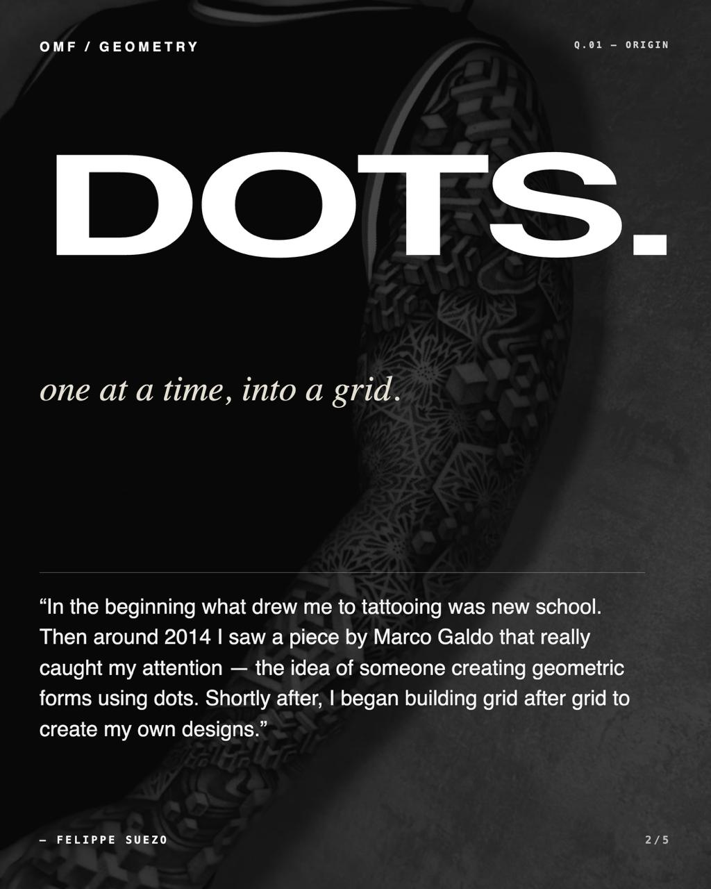
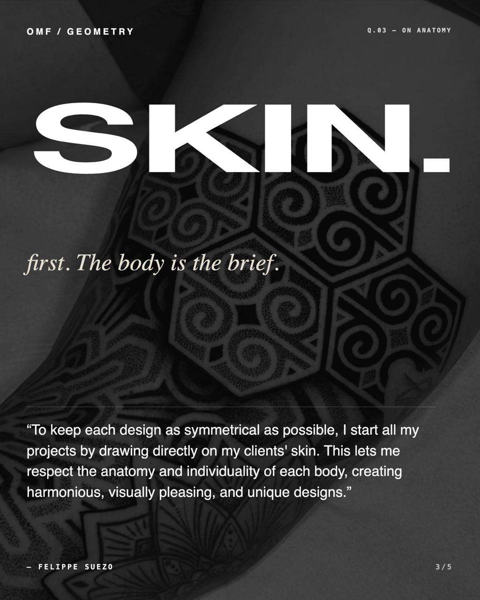

Suezo's work makes its case through patience. The pieces accumulate by pressure, by dot, by grid, by the slow insistence that symmetry should feel lived in on the body rather than simply imposed over it. What follows is a compact feature drawn directly from the five-slide editorial set built for OMF Geometry.
Q.01Origin
"In the beginning what drew me to tattooing was new school. Then around 2014 I saw a piece by Marco Galdo that really caught my attention, the idea of someone creating geometric forms using dots. Shortly after, I began building grid after grid to create my own designs."
That transition matters. The point is not abandoning energy for restraint, it is learning how to hold energy inside a stricter visual system. You can feel that in the work, the density is controlled, but never static.
"One at a time, into a grid."
Q.03Anatomy
"To keep each design as symmetrical as possible, I start all my projects by drawing directly on my clients' skin. This lets me respect the anatomy and individuality of each body, creating harmonious, visually pleasing, and unique designs."
It is a simple statement, but it cuts to the heart of the difference between decorative geometry and tattoo geometry. The body is not a neutral backdrop. It is the brief.
Q.04Process
"I begin with a freehand drawing to study the anatomy. I transfer those measurements with contact paper, then develop the design in software. After approval, on the day of the tattoo, I redo the entire process freehand, placing the stencils carefully in their proper positions."
Freehand, software, then freehand again. The method keeps the drawing responsive without losing the precision geometric work demands. It is rigorous, but still physical, still close to the client, still dependent on placement.


